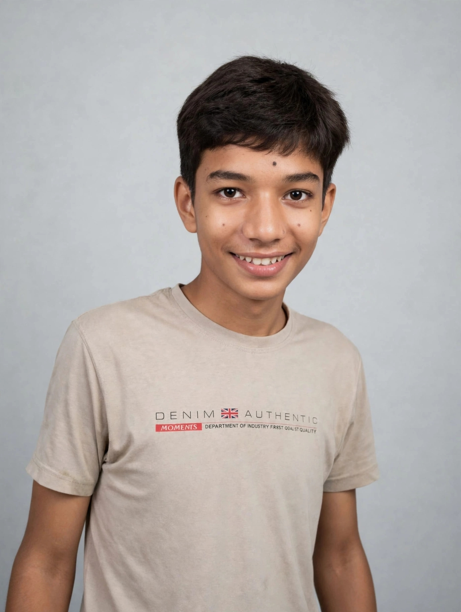

People rooted in the soil of our village who made Bandwar proud with their work, values and vision.

An emerging name among the youth of Bandwar. His deep connection to the village and his mindset to bring change in society with new ideas makes him stand out. This archive is to honor his journey.
A young face of Bandwar village, working for education and social awareness.